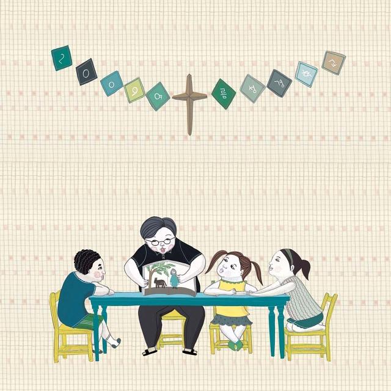

구약성경 구약의 역사서들은 연대순으로 배열되어 있으며 하나의 이야기가 지속된다 그러나 체험과 예언에 관한 책들은 주제별로 배열되어 있으며 앞서 완성된 역사적인 설명에 다양한 종류의 정보를 추가한다. More
 신약성경 신약성경의 줄거리를 두문단으로 간략히 줄이면 400년 이라는 침묵의 시간이 흐른후 하늘이 다시 열리고 천사들이 세례요한과 예수 그리스도의 탄생을 준비했다. 예수그리스도는 인류의 죄때문에 십자가에 못박혀 죽으셨고 죽은자 가운데서 ... More